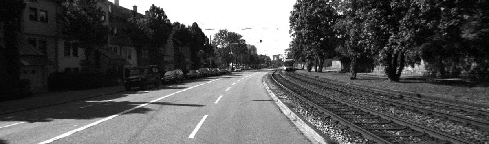

Experiment 1: Varying Kernel Size
For the first experiment, I ran the test image through the Conv2d operation using kernel sizes of 1 to 10. The observation of the output obtained was
that as kernel size increased, the output image became more blurry. As can be seen in the GIF below, showing the output image change with an increase in kernel size.

This makes sense if we look more closely at what the 2D convolution operation does.
Essentially, convolution consists of six steps:
Step 1: Positioning of kernel
For an input image (or array, or matrix) of X-number of columns by Y-number of rows, the kernel starts at the top-left most corner of the input.
Step 2: Element-wise Multiplication
In this position, for every element in the kernel, it is multiplied by the value of the element in the same position as it is in the input. For a kernel of size 2 (2 rows and 2 columns), we would have top-left, top-right, bottom-left and bottom-right elements.
Step 3: Summation of Products
The product of each element-wise multiplication operation is added together.
Step 4: Striding
The kernel takes a stride (or a step) down the row, depending on the stride length. If the stride length is 2, then the kernel moves two pixels down.
Step 5: Rinse & Repeat
The entire process is repeated until the kernel reaches the end of the row, then it moves down the start at the next column, and so on.
Step 6: Arrange Output
After the kernel reaches the end of the input, all the summation outputs are arranged in the order they were produced, and based on which row in the original input they were produced from, to form the final output
For a visual illustration, refer to the GIF below.

Explanation
What this means is that each time the kernel works goes over a set of pixels, it aggregates the total value of all the pixels in its area of influence.
The larger the kernel, the more the fine-grained details in an image are absorbed into the aggregate, whereas a small kernel will retain each pixel's
relative strength over neighbouring pixels, thus preserving the details of the image.
As such, we can conclude that a small kernel size is useful for extracting detailed features, while a large kernel size is good for getting
the general structure of an object.
On the application side, the visualised results above also show us how convolutions using a larger kernel size present a use case for blurring effects on images.